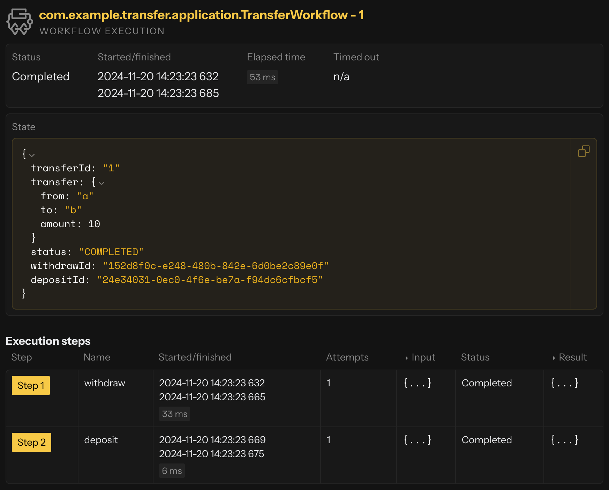

Implementing Workflows
Workflows implement long-running, multi-step business processes while allowing developers to focus exclusively on domain and business logic. Workflows provide durability, consistency and the ability to call other components and services. Business transactions can be modeled in one central place, and the Workflow will keep them running smoothly, or roll back if something goes wrong.

Workflow’s Effect API
Workflows have two distinct Effect APIs:
-
Effect API: Used for handling external commands. Methods that are exposed as public command handlers (invoked via the component client) must return an
Effect. This API allows you to update the workflow state, transition to a step, pause, end, delete, fail, or reply to commands. -
StepEffect API: Used for internal workflow steps. Methods that implement workflow steps (typically private) must return a
StepEffect. This API is similar in spirit toEffect, but is specialized for guiding the internal execution and transitions between workflow steps. It provides methods to update state, transition to the next step, pause, end, or delete the workflow.
Workflow is the only component that has both APIs: Effect for external commands and StepEffect for internal steps. This separation allows workflows to clearly distinguish between external interactions and internal orchestration logic.
For additional details, refer to Declarative Effects.
Skeleton
A Workflow implementation has the following code structure.
@Component(id = "transfer") (1)
public class TransferWorkflow extends Workflow<TransferState> { (2)
public record Withdraw(String from, int amount) {}
@Override
public WorkflowSettings settings() { (3)
// prettier-ignore
return WorkflowSettings.builder()
.defaultStepTimeout(ofSeconds(2))
.build();
}
private StepEffect withdrawStep() { (4)
// TODO: implement your step logic here
// prettier-ignore
return stepEffects() (5)
.updateState(currentState().withStatus(WITHDRAW_SUCCEEDED))
.thenTransitionTo(TransferWorkflow::depositStep);
}
private StepEffect depositStep() {
// TODO: implement your step logic here
// prettier-ignore
return stepEffects()
.updateState(currentState().withStatus(COMPLETED))
.thenEnd();
}
public Effect<Done> startTransfer(Transfer transfer) { (6)
TransferState initialState = new TransferState(transfer);
return effects() (7)
.updateState(initialState)
.transitionTo(TransferWorkflow::withdrawStep)
.thenReply(done());
}
}| 1 | Annotate the class with @Component and pass a unique identifier for this workflow type. |
| 2 | Class that extends Workflow. |
| 3 | Define optional configuration. |
| 4 | A step is a method that returns a StepEffect. |
| 5 | The step executes a given code and returns the effect that will instruct the runtime what to do next. For instance, you can update the state and transition to next step. |
| 6 | The workflow has methods that can be called with the component client. |
| 7 | Those methods return an Effect, which can be instructions to update the state and transition to a certain step. |
There must be at least one public command handler method, which returns Effect. It is the command handler methods that can be called with the component client from other components, such as an endpoint. The workflow is started by the first command, which will transition to the initial step.
Step handler methods can be private and are used to implement the internal business logic of the workflow. Although the StepEffect looks similar to the Effect, it is not the same. The StepEffect has different set of available methods that will guide the workflow execution.
Modeling state
We want to build a simple workflow that transfers funds between two wallets. Before that, we will create a wallet subdomain with some basic functionalities that we could use later. A WalletEntity is implemented as an Event Sourced Entity, which is a better choice than a Key Value Entity for implementing a wallet, because a ledger of all transactions is usually required by the business.
The Wallet class represents domain object that holds the wallet balance. We can also withdraw or deposit funds to the wallet.
public record Wallet(String id, int balance) {
public Wallet withdraw(int amount) {
return new Wallet(id, balance - amount);
}
public Wallet deposit(int amount) {
return new Wallet(id, balance + amount);
}
}Domain events for creating and updating the wallet.
public sealed interface WalletEvent {
@TypeName("created")
record Created(int initialBalance) implements WalletEvent {}
@TypeName("withdrawn")
record Withdrawn(int amount) implements WalletEvent {}
@TypeName("deposited")
record Deposited(int amount) implements WalletEvent {}
}The domain object is wrapped with a Event Sourced Entity component.
@Component(id = "wallet")
public class WalletEntity extends EventSourcedEntity<Wallet, WalletEvent> {
public Effect<Done> create(int initialBalance) { (1)
if (currentState() != null) {
return effects().error("Wallet already exists");
} else {
return effects()
.persist(new WalletEvent.Created(initialBalance))
.thenReply(__ -> done());
}
}
public Effect<Done> withdraw(int amount) { (2)
if (currentState() == null) {
return effects().error("Wallet does not exist");
} else if (currentState().balance() < amount) {
return effects().error("Insufficient balance");
} else {
return effects().persist(new WalletEvent.Withdrawn(amount)).thenReply(__ -> done());
}
}
public Effect<Done> deposit(int amount) { (3)
if (currentState() == null) {
return effects().error("Wallet does not exist");
} else {
return effects().persist(new WalletEvent.Deposited(amount)).thenReply(__ -> done());
}
}
public Effect<Integer> get() { (4)
if (currentState() == null) {
return effects().error("Wallet does not exist");
} else {
return effects().reply(currentState().balance());
}
}
}| 1 | Create a wallet with an initial balance. |
| 2 | Withdraw funds from the wallet. |
| 3 | Deposit funds to the wallet. |
| 4 | Get current wallet balance. |
Now we can focus on the workflow implementation itself. A workflow has state, which can be updated in command handlers and step implementations. During the state modeling we might consider the information that is required for validation, running the steps, collecting data from steps or tracking the workflow progress.
public record TransferState(Transfer transfer, TransferStatus status) {
public record Transfer(String from, String to, int amount) {} (1)
public enum TransferStatus { (2)
STARTED,
WITHDRAW_SUCCEEDED,
COMPLETED,
}
public TransferState(Transfer transfer) {
this(transfer, STARTED);
}
public TransferState withStatus(TransferStatus newStatus) {
return new TransferState(transfer, newStatus);
}
}| 1 | A Transfer record encapsulates data required to withdraw and deposit funds. |
| 2 | A TransferStatus is used to track workflow progress. |
Implementing behavior
Now that we have our workflow state defined, the remaining tasks can be summarized as follows:
-
declare your workflow and pick a workflow id (it needs to be unique as it will be used for sharding purposes);
-
implement handler(s) to interact with the workflow (e.g. to start a workflow, or provide additional data) or retrieve its current state;
-
provide a workflow definition with all possible steps and transitions between them.
Starting workflow
Have a look at what our transfer workflow will look like for the first 2 points from the above list. We will now define how to launch a workflow with a startTransfer command handler that will return an Effect to start a workflow by providing a transition to the first step. Also, we will update the state with an initial value.
@Component(id = "transfer") (1)
public class TransferWorkflow extends Workflow<TransferState> { (2)
public Effect<Done> startTransfer(Transfer transfer) { (3)
if (transfer.amount() <= 0) { (4)
return effects().error("transfer amount should be greater than zero");
} else if (currentState() != null) {
return effects().error("transfer already started");
} else {
TransferState initialState = new TransferState(transfer); (5)
Withdraw withdrawInput = new Withdraw(transfer.from(), transfer.amount());
return effects()
.updateState(initialState) (6)
.transitionTo(TransferWorkflow::withdrawStep) (7)
.withInput(withdrawInput)
.thenReply(done()); (8)
}
}| 1 | Annotate such class with @Component and pass a unique identifier for this workflow type. |
| 2 | Extend Workflow<S>, where S is the state type this workflow will store (i.e. TransferState). |
| 3 | Create a method to start the workflow that returns an Effect<Done> class. |
| 4 | The validation ensures the transfer amount is greater than zero and the workflow is not running already. Otherwise, we might corrupt the existing workflow. |
| 5 | From the incoming data we create an initial TransferState. |
| 6 | We instruct Akka to persist the new state. |
| 7 | With the transitionTo method, we inform that the first step is defined in TransferWorkflow::withdrawStep and the input for this step is a Withdraw object. |
| 8 | The last instruction is to inform the caller that the workflow was successfully started. |
The @Component value transfer is common for all instances of this workflow but must be stable - cannot be changed after a production deploy - and unique across the different workflow types.
|
Workflow steps
One missing piece of our transfer workflow implementation is the workflow steps implementation. A workflow Step has an action to perform (e.g. a call to an Akka component, or a call to an external service) and a transition to select the next step (or end transition to finish the workflow, in case of the last step).
TODO: add some diagram or sth
public record Withdraw(String from, int amount) {} (1)
public record Deposit(String to, int amount) {} (1)
private final ComponentClient componentClient;
public TransferWorkflow(ComponentClient componentClient) {
this.componentClient = componentClient;
}
@StepName("withdraw") (2)
private StepEffect withdrawStep(Withdraw withdraw) {
componentClient
.forEventSourcedEntity(withdraw.from)
.method(WalletEntity::withdraw)
.invoke(withdraw.amount); (3)
String to = currentState().transfer().to(); (4)
int amount = currentState().transfer().amount();
Deposit depositInput = new Deposit(to, amount);
return stepEffects()
.updateState(currentState().withStatus(WITHDRAW_SUCCEEDED))
.thenTransitionTo(TransferWorkflow::depositStep) (5)
.withInput(depositInput);
}
@StepName("deposit") (2)
private StepEffect depositStep(Deposit deposit) { (6)
componentClient
.forEventSourcedEntity(deposit.to)
.method(WalletEntity::deposit)
.invoke(deposit.amount);
// prettier-ignore
return stepEffects()
.updateState(currentState().withStatus(COMPLETED))
.thenEnd(); (7)
}| 1 | Step inputs definition. |
| 2 | Optional @StepName can be used specify the step name, otherwise the method name will be used. |
| 3 | Using the ComponentClient, which is injected in the constructor, we instruct Akka to run a given call to withdraw funds from a wallet. |
| 4 | The state of the workflow can be accessed with currentState() method. |
| 5 | After successful withdrawal, we return a StepEffect that will update the workflow state and move to the next step defined in TransferWorkflow::depositStep method. An input parameter for this step is a Deposit record. |
| 6 | Another workflow step implementation to deposit funds to a given wallet. |
| 7 | This time we return an effect that will stop workflow processing, by using the special thenEnd method. |
The step consists of two parts, an execution of the business logic and StepEffect construction, where you can update the state and decide (based on the business logic outcome) what the next step should be and provide input for it, if required.
The workflow will automatically execute the steps in a reliable and durable way. This means that if a step fails, it will be retried until it succeeds or the retry limit of the recovery strategy is reached and separate error handling can be performed. The state machine of the workflow is durable, which means that if the workflow is restarted for some reason it will continue from where it left off, i.e. execute the current non-completed step again.
In the following example all WalletEntity interactions are not idempotent. It means that if the workflow step retries, it will make the deposit or withdraw again. In a real-world scenario, you should consider making all interactions idempotent with a proper deduplication mechanism. A very basic example of handling retries for workflows can be found in this sample.
|
Retrieving state
To have access to the current state of the workflow we can use currentState(). However, if this is the first command we are receiving for this workflow, the state will be null. We can change it by overriding the emptyState method. The following example shows the implementation of the read-only command handler:
public ReadOnlyEffect<TransferState> getTransferState() {
if (currentState() == null) {
return effects().error("transfer not started");
} else {
return effects().reply(currentState()); (1)
}
}| 1 | Return the current state as reply for the request. |
| We are returning the internal state directly back to the requester. In the endpoint, it is usually best to convert this internal domain model into a public model so the internal representation is free to evolve without breaking clients code. |
A full transfer workflow source code sample can be downloaded as a zip file. Follow the README file to run and test it.
Deleting state
If you want to delete the workflow state, you can use the effects().delete method. This will remove the workflow from the system.
public Effect<Done> delete() {
return effects()
.delete() (1)
.thenReply(done());
}| 1 | Instruction to delete the workflow. |
When you give the instruction to delete a running workflow, it is equivalent to ending and deleting a workflow. For already finished workflows, it is possible to delete them in the command handler. The actual removal of the workflow state is delayed to give downstream consumers time to process all prior updates. Including the fact that the workflow has been deleted (via method annotated with @DeleteHandler). By default, the existence of the workflow is completely cleaned up after a week.
You can still handle read requests to the workflow until it has been completely removed, but the current state will be empty (or null). To check whether the workflow has been deleted, you can use the isDeleted method inherited from the Workflow class.
It is best to not reuse the same workflow id after deletion, but if that happens after the workflow has been completely removed it will be instantiated as a completely new workflow without any knowledge of previous state.
Terminating workflow
A running workflow can be terminated from the outside by calling terminate directly on the component client. Once
terminated, the workflow cannot be resumed, and calling terminate again is safe — it is a no-op on an already-finished workflow.
If a step is in flight, the workflow does not wait for it to complete, and any result is ignored.
After termination, the workflow is passivated and does not consume any runtime resources.
| 1 | Terminate the workflow with a short, human-readable reason. The reason is persisted in the workflow’s event journal and written to the runtime logs at termination time, so it must not contain secrets or PII. |
The reason is optional — there is also an overload that takes only the workflow class. An async variant terminateAsync is available, returning a CompletionStage<Done>.
Termination preserves the workflow state — it only prevents further execution. If you also want to remove the state, use delete from within a command handler (see Deleting state).
|
Suspending and resuming workflow
In addition to terminating a workflow, you can pause execution from the outside with suspend and bring it back with resume. This is useful when you need to halt a workflow temporarily — for example, during maintenance or while investigating an in-flight execution — without giving up the option to continue later.
Suspension behaves like termination: if a step is in flight, the workflow does not wait for it to complete, and any result it produces after the suspend takes effect is ignored. On resume, execution restarts at the step in flight, giving it a fresh chance to run. Both calls are idempotent — suspending an already-suspended workflow, or resuming a workflow that is not suspended, is a successful no-op.
Timeouts remain active while a workflow is suspended:
-
If a workflow timeout fires while suspended, the workflow fails with a timeout.
-
If a workflow timeout with a failover step fires while suspended, the failover step is executed on resume.
-
If a pause timer fires while suspended, the configured timeout handler is called on resume.
While suspended, the workflow is passivated and does not consume any runtime resources.
| 1 | Suspend the workflow with a short, human-readable reason. As with terminate, the reason is persisted and logged, so it must not contain secrets or PII. |
| 1 | Resume a previously suspended workflow. |
The reason on suspend is optional — there is also an overload that takes only the workflow class. Async variants suspendAsync and resumeAsync are available, returning CompletionStage<Done>.
Calling external services
The Workflow can be used not only to orchestrate Akka components, but also to call external services. The step implementation can invoke HTTP endpoint, a gRPC service, or any other service that can be called from the Java code.
private StepEffect detectFraudsStep() {
FraudDetectionService.FraudDetectionResult result = fraudDetectionService.detectFrauds(
currentState().transfer()
); (1)
var workflowId = commandContext().workflowId();
var transfer = currentState().transfer();
return switch (result) {
case ACCEPTED -> { (2)
TransferState initialState = TransferState.create(workflowId, transfer);
Withdraw withdrawInput = new Withdraw(initialState.withdrawId(), transfer.amount());
yield stepEffects()
.updateState(initialState)
.thenTransitionTo(TransferWorkflow::withdrawStep)
.withInput(withdrawInput);
}
case MANUAL_ACCEPTANCE_REQUIRED -> { (3)
TransferState waitingForAcceptanceState = TransferState.create(
workflowId,
transfer
).withStatus(WAITING_FOR_ACCEPTANCE);
yield stepEffects()
.updateState(waitingForAcceptanceState)
.thenTransitionTo(TransferWorkflow::waitForAcceptanceStep);
}
};
}| 1 | Calls an external service to detect frauds. |
| 2 | When the transfer is accepted, continues with the next step. |
| 3 | Otherwise, transitions to the WAITING_FOR_ACCEPTANCE step, which will pause the workflow and wait for the human acceptance of the transfer. |
Pausing workflow
A long-running workflow can be paused while waiting for some additional information to continue processing. A special pause transition can be used to inform Akka that the execution of the Workflow should be postponed. By launching a Workflow command handler, the user can then resume the processing. Optionally, you can specify a pause timeout and timeout handler that will be automatically invoked to inform the Workflow that the expected time for the additional input has passed.
private StepEffect waitForAcceptanceStep() {
return stepEffects()
.thenPause( (1)
pauseSetting(ofHours(8)).timeoutHandler(TransferWorkflow::acceptanceTimeout) (2)
);
}| 1 | Pauses the Workflow execution. |
| 2 | Specifies a pause duration and a timeout handler. The timeout handler should return Effect<Done>. |
| Exposing additional mutational methods from the Workflow implementation should be done with special caution. Accepting a call to such a method should only be possible when the Workflow is in the expected state. If the workflow is in the middle of a step execution, such a call will be queued and only handled once the step completes. |
public Effect<String> accept() {
if (currentState() == null) {
return effects().error("transfer not started");
} else if (currentState().status() == WAITING_FOR_ACCEPTANCE) { (1)
Transfer transfer = currentState().transfer();
Withdraw withdrawInput = new Withdraw(currentState().withdrawId(), transfer.amount());
return effects()
.transitionTo(TransferWorkflow::withdrawStep)
.withInput(withdrawInput)
.thenReply("transfer accepted");
} else { (2)
return effects()
.error("Cannot accept transfer with status: " + currentState().status());
}
}| 1 | Accepts the request only when status is WAITING_FOR_ACCEPTANCE. |
| 2 | Otherwise, rejects the requests. |
Notification
When a workflow is running, clients often need to track its progress. Rather than repeatedly polling the workflow state, you can use the NotificationPublisher to push updates to subscribers in real-time. This is more efficient and provides a better user experience, especially for long-running workflows.
The notification mechanism works as follows:
-
The workflow injects a
NotificationPublisher<T>whereTis the notification message type -
During step execution, the workflow calls
publish(message)to send notifications -
The workflow exposes a method returning
NotificationStream<T>for clients to subscribe -
Clients use the
ComponentClientto subscribe and receive notifications as a stream
Publishing notifications
To add notifications to a workflow, inject the NotificationPublisher in the constructor and call publish() at appropriate points during execution.
@Component(id = "transfer")
public class TransferWorkflowWithNotifications extends Workflow<TransferState> {
private final NotificationPublisher<String> notificationPublisher;
public TransferWorkflowWithNotifications(
NotificationPublisher<String> notificationPublisher
) { (1)
this.notificationPublisher = notificationPublisher;
}
private StepEffect withdrawStep() {
// TODO: implement your step logic here
// prettier-ignore
notificationPublisher.publish("Withdraw completed"); (2)
return stepEffects()
.updateState(currentState().withStatus(WITHDRAW_SUCCEEDED))
.thenTransitionTo(TransferWorkflowWithNotifications::depositStep);
}
private StepEffect depositStep() {
// TODO: implement your step logic here
// prettier-ignore
notificationPublisher.publish("Deposit completed"); (2)
return stepEffects().updateState(currentState().withStatus(COMPLETED)).thenEnd();
}
public NotificationStream<String> updates() { (3)
return notificationPublisher.stream();
}
}| 1 | Inject NotificationPublisher typed with your notification message type. This can be a simple String, a Java Record, or a sealed interface for multiple message types. |
| 2 | Publish notifications at key points in the workflow to inform subscribers of the progress. |
| 3 | Expose the notification stream via a public method. Clients will reference this method when subscribing. |
| For workflows with different types of updates (status changes, progress percentages, error messages), consider using a sealed interface to define your notification types. This allows subscribers to handle different notification types appropriately. |
Subscribing to notifications
Clients subscribe to workflow notifications using the ComponentClient. The notifications are delivered as a reactive stream, which can be exposed to external clients as Server-Sent Events (SSE).
@HttpEndpoint("/transfer")
@Acl(allow = @Acl.Matcher(principal = Acl.Principal.ALL))
public class WorkflowEndpoint {
public record TransferUpdate(String message) {} (1)
@Get("/updates/{transferId}")
public HttpResponse updates(String transferId) {
var source = componentClient
.forWorkflow(transferId)
.notificationStream(TransferWorkflowWithNotifications::updates)
.source()
.map(msg -> new TransferUpdate(msg)); (2)
return HttpResponses.serverSentEvents(source);
}
}| 1 | Define API-specific records to avoid exposing internal domain types outside the service. |
| 2 | Map notifications to API records using the map operator on the notification source. The result can be wrapped with HttpResponses.serverSentEvents() for SSE delivery to HTTP clients. |
| The notification stream is a live stream that emits messages only after the client creates the stream—it does not replay historical messages. While the stream is running, it delivers all messages in order without message loss. If the stream detects missing messages, it will fail, allowing clients to reconnect and recover. |
| Notifications should not be used for building business logic. Akka does not guarantee delivery of every notification. Messages may be lost due to network issues, client disconnections, or other transient failures. If your application requires reliable state synchronization, implement a reconciliation mechanism that fetches the authoritative workflow state when needed. |
Error handling
Design for failure is one of the key attributes of all Akka components. Workflow has the richest set of configurations from all of them. It is essential to build robust and reliable solutions.
Timeouts
Each workflow step has a default timeout of 5 seconds. You can override this default for all steps in the workflow settings method, or set a custom timeout for individual steps. You can also specify global workflow duration timeout with optional timeout command handler.
- NOTE
-
Workflow timeout should be greater than the step timeout. Otherwise, the workflow settings validation will report an exception at runtime.
@Override
public WorkflowSettings settings() {
return WorkflowSettings.builder()
.timeout(ofSeconds(10)) (1)
.defaultStepTimeout(ofSeconds(2)) (2)
.stepTimeout(TransferWorkflow::failoverHandlerStep, ofSeconds(1)) (3)
.build();
}| 1 | Sets a global workflow timeout. |
| 2 | Sets a default timeout for all workflow steps. |
| 3 | Overrides the step timeout for a specific step. |
| When a global workflow timeout occurs, the workflow finishes and no further transitions are allowed. You can optionally define a timeout handler that executes one final step to handle the timeout situation gracefully, but that step must end the workflow (other transitions will be ignored). |
Recover strategy
It is time to define what should happen in case of step timeout or any other unhandled error.
@Override
public WorkflowSettings settings() {
return WorkflowSettings.builder()
.defaultStepRecovery(maxRetries(1).failoverTo(TransferWorkflow::failoverHandlerStep)) (1)
.stepRecovery(
TransferWorkflow::depositStep,
maxRetries(2).failoverTo(TransferWorkflow::compensateWithdrawStep)
) (2)
.build();
}| 1 | Set a default failover transition for all steps with the maximum number of retries. |
| 2 | Override the step recovery strategy for the deposit step. |
Compensation
The idea behind the Workflow error handling is that workflows should only fail due to unknown errors during execution. In general, you should always write your workflows so that they do not fail on any known edge cases. If you expect an error, it is better to be explicit about it, possibly with your domain types. Based on this information and the flexible Workflow API you can define a compensation for any workflow step.
private StepEffect depositStep(Deposit deposit) {
String to = currentState().transfer().to();
WalletResult result = componentClient
.forEventSourcedEntity(to)
.method(WalletEntity::deposit) (1)
.invoke(deposit);
return switch (result) {
case Success __ -> stepEffects() (2)
.updateState(currentState().withStatus(COMPLETED))
.thenEnd();
case Failure failure -> {
yield stepEffects()
.updateState(currentState().withStatus(DEPOSIT_FAILED))
.thenTransitionTo(TransferWorkflow::compensateWithdrawStep); (3)
}
};
}
private StepEffect compensateWithdrawStep() { (4)
var transfer = currentState().transfer();
String commandId = currentState().depositId();
WalletResult result = componentClient
.forEventSourcedEntity(transfer.from())
.method(WalletEntity::deposit)
.invoke(new Deposit(commandId, transfer.amount()));
return switch (result) {
case Success __ -> stepEffects() (5)
.updateState(currentState().withStatus(COMPENSATION_COMPLETED))
.thenEnd();
case Failure __ -> throw new IllegalStateException( (6)
"Expecting succeed operation but received: " + result
);
};
}| 1 | Explicit deposit call result type WalletResult. |
| 2 | Finish workflow as completed, in the case of a successful deposit. |
| 3 | Launch compensation step to handle deposit failure. The "withdraw" step must be reversed. |
| 4 | Compensation step is like any other step, with the same set of functionalities. |
| 5 | Correct compensation can finish the workflow. |
| 6 | Any other result might be handled by a default recovery strategy. |
Compensating a workflow step(s) might involve multiple logical steps and thus is part of the overall business logic that must be defined within the workflow itself. For simplicity, in the example above, the compensation is applied only to withdraw step. Whereas deposit step itself might also require a compensation. In case of a step timeout we cannot be certain about step successful or error outcome.
A full error handling and compensation sample can be downloaded as a zip file. Run TransferWorkflowIntegrationTest and examine the logs from the application.
Multi-region replication
Stateful components like Event Sourced Entities, Key Value Entities or Workflow can be replicated to other regions. This is useful for several reasons:
-
resilience to tolerate failures in one location and still be operational, even multi-cloud redundancy
-
possibility to serve requests from a location near the user to provide better responsiveness
-
load balancing to be able to handle high throughput
For each stateful component instance there is a primary region, which handles all write requests. Read requests can be served from any region.
Read requests are defined by declaring the command handler method with ReadOnlyEffect as return type. A read-only handler cannot update the state, and that is enforced at compile time.
public ReadOnlyEffect<ShoppingCart> getCart() {
return effects().reply(currentState()); (3)
}Write requests are defined by declaring the command handler method with Effect as return type, instead of ReadOnlyEffect. Write requests are routed to the primary region and handled by the stateful component instance in that region even if the original call to the instance with the component client was made from another region.
State changes (Workflow, Key Value Entity) or events (Event Sourced Entity) persisted by the instance in the primary region are replicated to other regions and processed by corresponding instance there. This means that the state of the stateful components in all regions are updated from the primary.
The replication is asynchronous, which means that read replicas are eventually updated. Normally within a few milliseconds, but if there is for example a problem with the network between the regions it can take longer time for the read replicas to become up to date, but eventually they will.
This also means that you might not see your own writes, immediately. Consider the following:
-
send a write request and that is routed to a primary in another region
-
after receiving the response of the write request, you send a read request that is served by the non-primary region
-
the stateful component instance in the non-primary region might not have seen the replicated changes yet, and therefore replies with "stale" information
If it is important for some read requests to have seen latest writes you can use Effect for such command handler, even though it is not persisting any events. Then the request will be routed to the primary and use the latest fully consistent state.
The operational aspects are described in Regions.